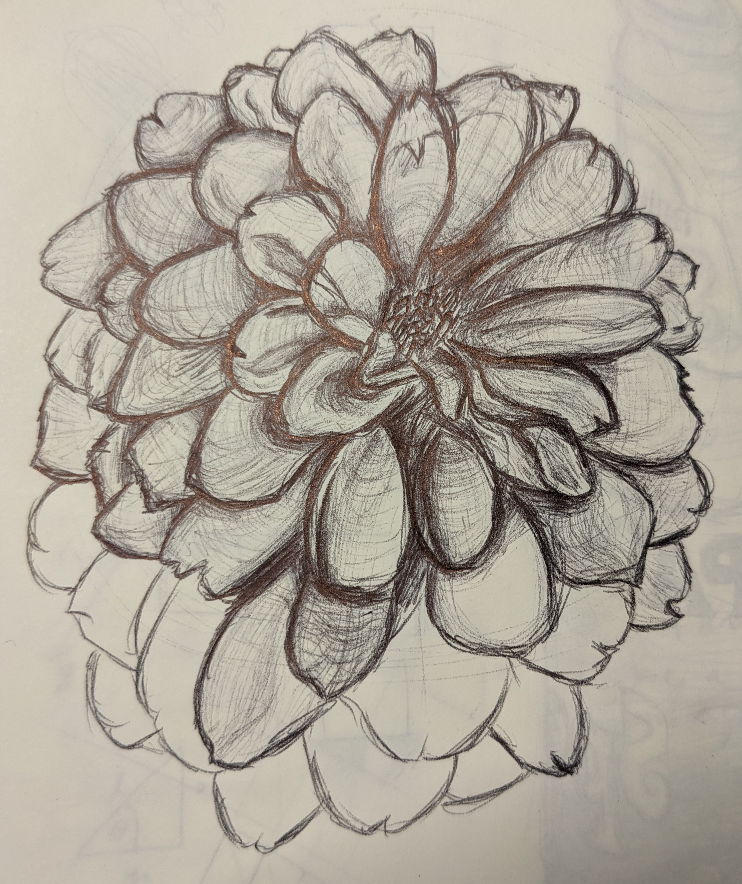
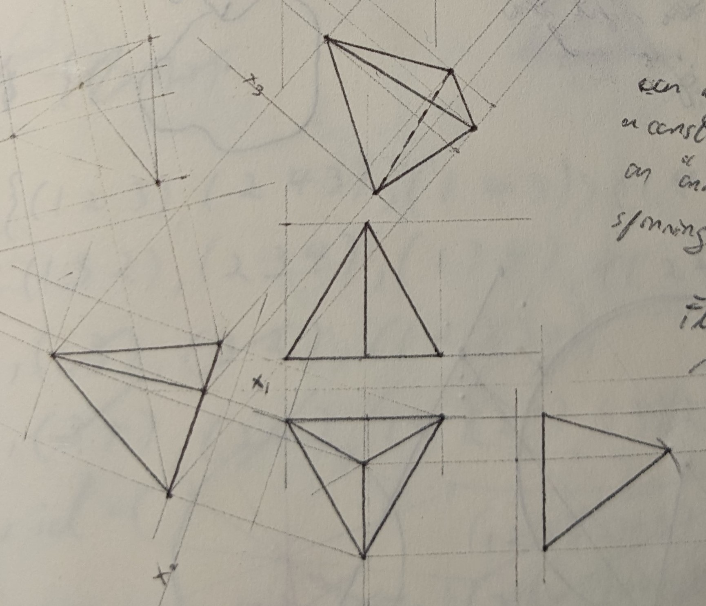
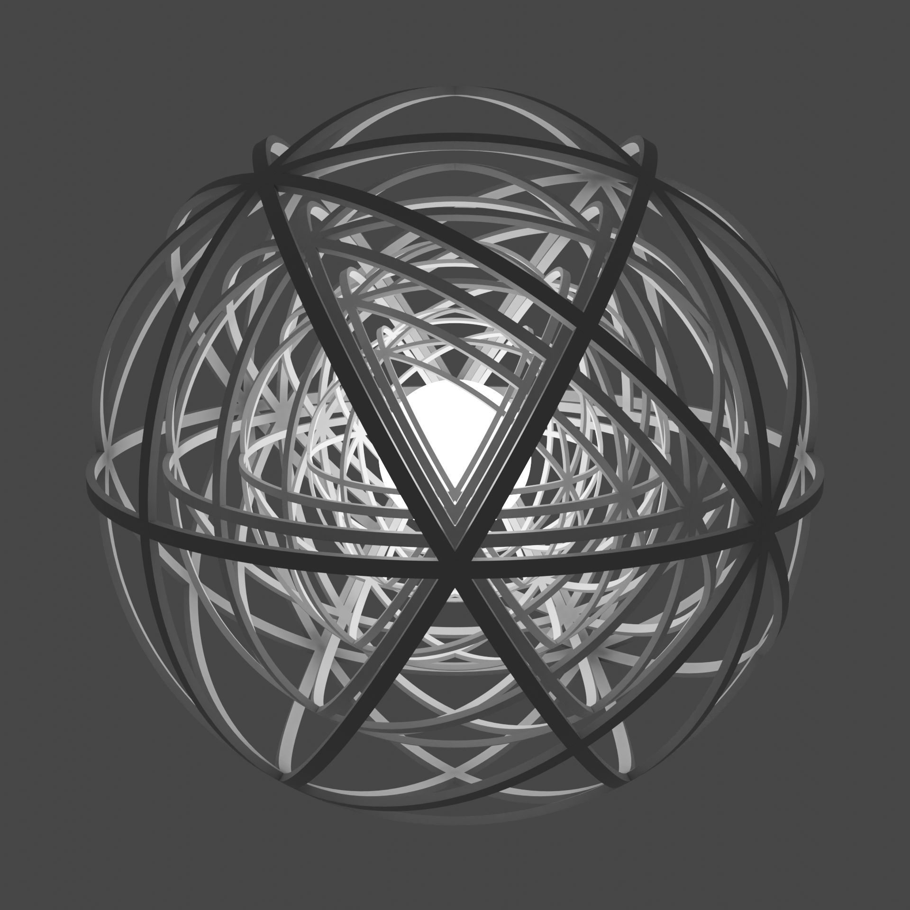

This page is here to let me just talk about myself. If you would like to get to know be for some reason, lets have a chat in person, but if you are too socially awkward, or you don't actually want to talk to me, you can have a read of this. To the left a funny picture of me during my graduation from my BSc.
I am currently a masters student in Trinity college Dublin studing a more mathematically inclined version of a High Preformance Computing masters. I have a BSc from Maynooth University in Theoretical Physics and Mathematics, an accelerated 3 year degree which I enjoyed thoroughly and had an excellent cohort to share the 3 years with. Apart from my education which is a significant part of my interests and hobbys, I love listening to music in a multitude of genres from artists like Daft Punk, Justice, Rammstein and Max Richter are currently among my favourites.
Following this paragraph I'll try to summarise some of the things that are currently keeping me interested and some fun things I did.
Germany, DAAD RISE
During the summer of 2024 I was fortunate enough to get a research internship abroad in Oldeburg Germany, a relativly small town, very nice to live in. I did this internship in an appied research insitute called Fraunhofer IWES which focuses on reasearch anything wind turbine based, from modelling using numerical software to using experimental methods with their wind tunnel to improve wind turbine technologies. I worked on analysing some large datasets and working with numerical software with produced CFD (Computational Fluid Dynamics) results over a terrain of interest. This intership was granted by the DAAD RISE Professional programme, really cool programme do apply for it if you can. So cool that they will "parade" you around Bonn in my case. I met so many interesting people, travelled around my corner of Germany, ate their Döners and had a great internship experience. Part of an excursion organised by the people running this programme we went to Forschungszentrum Jülich in which we were given a tour of some of the place, part of which was seeing a real running Quantum computer (very loud btw), really cool! Picture of me next to it somewhere in this page, wherever it decides to float to.

Maths/Reading
In my free time I have found myself reading more mathematics related subjects that you may not find in a standard mathematics programme, like, stochastic calculus, which caught my particular attention because of a particular construction called the Itô integral. The main goal of this subject or at least original goal, is to in some sense predict stock market outcomes. This Itô integral leads to contructions of essentially PDE systems which they call SDE's (Stochastic Differential Equations) through which you can solve for some interestig random variables. I should really write something about it more concretely to show I actually know something but for now here is a fun theroem which parallels the fundamental theorem of calculus. Some actual details here. $$ f(B_t) = f(0) + \int_0^t f'(B_s) dB_s + \frac{1}{2} \int_0^t f''(B_s) ds $$ Currently sitting in on an algebraic topology class which deals with continious deformations of objects and their algebraic properties, and a lattice field theory class since quantum physics is funky.
Music
Anytime you see me sitting at a desk I will probaly be tucked away in my earphones, trying not to blast music into my ears. Some of my current favourite artist include Daft Punk, Max Richter, Jusitce, Rammstein and just the other day I found a polish duo called Kaliber 44 and they have some fun sounding hiphop if you can understand lyrics. I like music in alot genres but for some reason I can't stand anything that is played on the radio, something about the general audience makes me prefer to drive in silence than listen to it. I have played the violin at for a short period of time, self taught so I dont truly know how good I was which I'm sure infulenced my taste in classical music. There is a really cool solo violin piece by Bach which demands the violinist to play on multiple strings at once, almost sounds like it is not a solo piece.
Mish mash of rest of hobbys
I own a small rasperri pi computer and I like to leave it running some bits and bobs for myself. The easiest thing to boot up on it are Discord bots. Fun to have something like a music bot you can call into your voice chat and blast some music into your friends chat, or alternatively to play some music. A fun way to learn about linux computers. Also runs a minecraft server suprisingly well. A link to some more links.
Every once in a while I like to do make some art in the form of sketching or recenly some more techical graphics. Also find it fun to play around with software like blender to make some cool 3d models, either more generativeely or more manually. I scatter around some bits I made.
